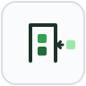
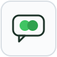
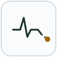
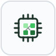

research
Research Areas
Our work spans four interconnected areas. Each area is supported by one or more funded projects — click any project for its full description, publications, and team.

Newcomer Onboarding & Skill Matching
How people find their footing in open source — and how we can make that easier.
We study the barriers newcomers face when joining open source projects, how skills are matched to tasks, and how tooling and community practices can lower the entry cost. This work has produced both empirical findings and practical systems deployed in real projects.
In this research, we aim to develop applicable principles and methods to scaffold the newcomers' skill acquisition as they onboard into an Open Source Software (OSS) project. This research brings new insights that can improve how newcomers
A gamified learning environment that scaffolds students through their first real open source contributions, lowering the barriers that make newcomers give up.

CommUnityBuddy
A conversational agent that helps newcomers find their footing in open source communities.
Software Engineering Education
Teaching SE through authentic open source contribution and AI-assisted learning.
We investigate how students learn software engineering by contributing to real open source projects, how AI tools change the learning dynamic, and what cognitive scaffolding helps beginners succeed in introductory programming courses.
We expand knowledge about how to leverage an authentic OSS project as a learning environment and how to engage learners in the activities. As part of this project we use different approaches to support students to learn software engineering
A conversational agent that scaffolds computational thinking for students in introductory programming courses.
OSS Sustainability & Governance
The health, governance, and long-term survival of open source ecosystems.
We examine what keeps open source projects alive — maintainer burnout, governance structures, contributor diversity, and the dynamics of corporate participation. A recurring thread is the tension between community and institutional interests.
Growing the open source ecosystem around data.table, R's high-performance data manipulation package, through governance, contributor pipelines, and sustainability work.

DisTrac — forecasting core-developer inactivity
Forecasting when core developers of an open source project are about to disengage, so communities can act before knowledge walks out the door.
Identifying and removing the gender-inclusivity bugs in the tools and processes open source projects rely on.

AI in Software Engineering
How AI tools reshape developer work, collaboration, and productivity.
We study how developers adopt and experience AI coding assistants and generative AI tools — their trust, their practices, and the effects on productivity, quality, and team dynamics. This area connects empirical software engineering with the fast-moving AI tool landscape.
We expand knowledge about how to leverage an authentic OSS project as a learning environment and how to engage learners in the activities. As part of this project we use different approaches to support students to learn software engineering
A conversational agent that scaffolds computational thinking for students in introductory programming courses.